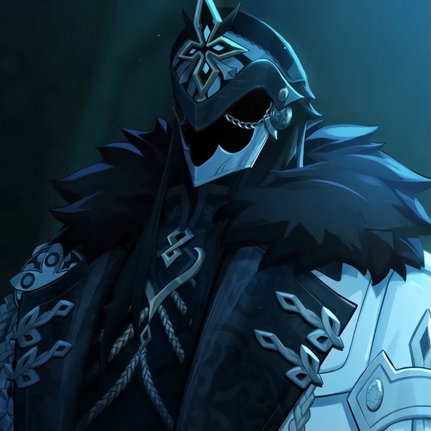
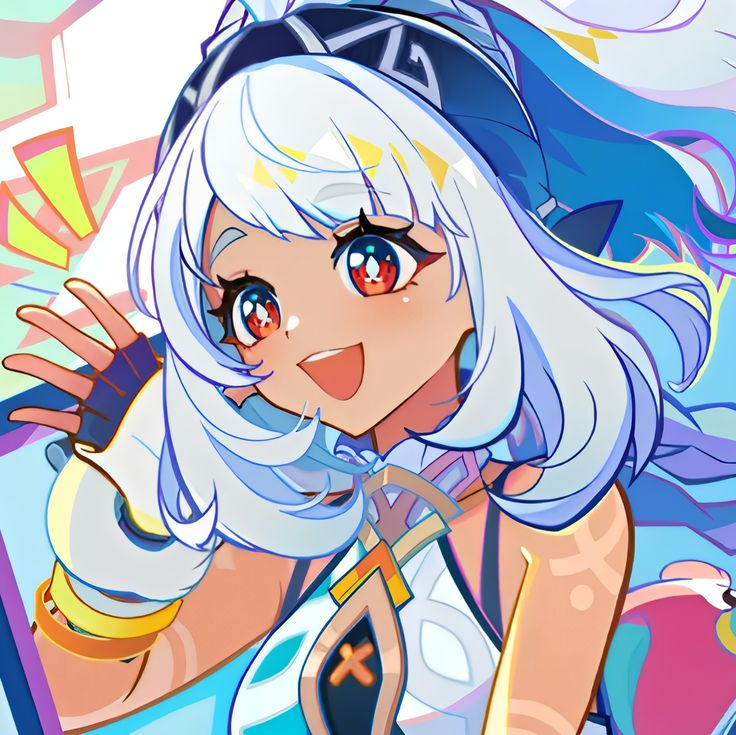
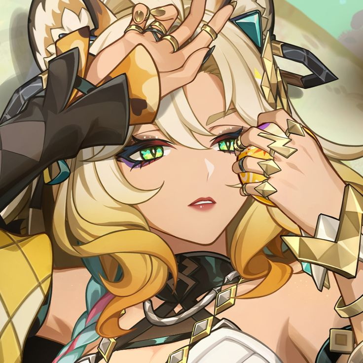
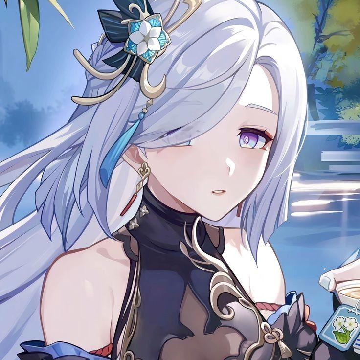

| Photo | Name | Element and Weapon | Info |
|---|---|---|---|
|  | Capitano | Cryo ~ Sword |
The number 1 in ranking of the Fatui Harbingers, Capitano, also known as the Captain. The Fatui Harbingers is a society of high elites in Snezhnaya, who were given authority from the Cryo Archon/God, the Tsaritsa. Not much is known about the Captain for he hides his face under the Mask he wears all the time. |
 |
Hu Tao | Pyro ~ Polearm |
The 77th Director of the Wangsheng Funeral Parlor and a talented poet of Liyue. Hu tao is seen to be a cheerful girl but she takes her funeral ceremonies with upmost dignity. She enjoys playing tricks on other people. |
|  | Mualani | Hydro ~ Catalyst |
A watersports store owner, tour guide, and a surfer all in one! Mualani is a member of one of the many tribes in Natlan, the People of the Springs, bearing the Ancient name "Umoja" which means "Unity". She's always up for an adventure no matter the weather. |
|  | Xilonen | Geo ~ Sword |
An Laid-back, nonchalant, Ocelot who specializes in Blacksmithery. She also has skill in DJing and rapping (as seen in her Character Introduction). All her works are known in Natlan, from her own rollerblades, to the Pyro Archon's sunglasses which can withstand high temperatures, to a fully-fuctioning flying gun. She belongs to the Children of the Echoes tribe, bearing the Ancient name, "Baraka" |
|  | Shenhe | Cryo ~ Polearm |
Initially a member of the Tianheng Thaumaturges clan of exorcists until she was attempted to be sacrified to a God, at the age of six, by her father as an attempt to bring back his wife. Although young, she was able to defeat the God, but this caused her to be cursed forever. She was later on taken in by an Adeptus, the Cloud Retainer, as her disciple. |